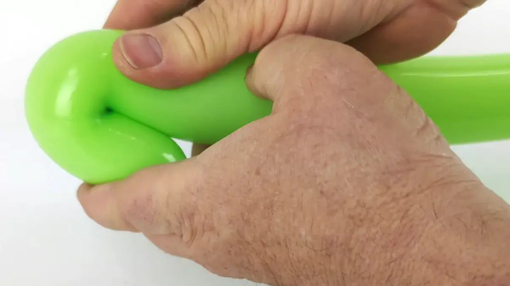
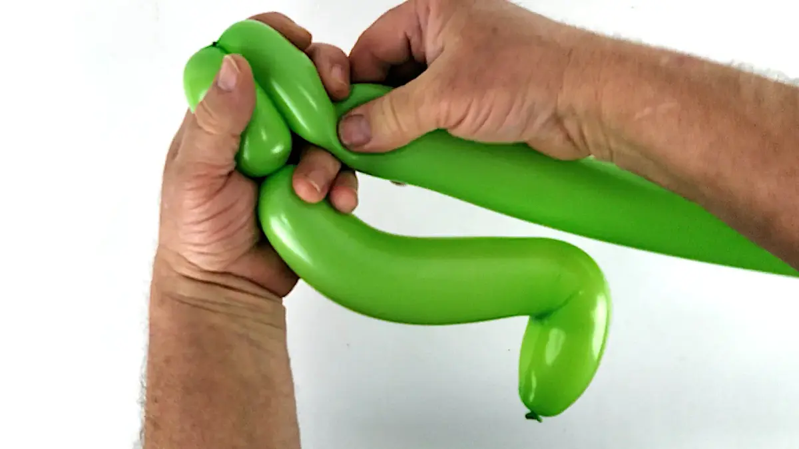
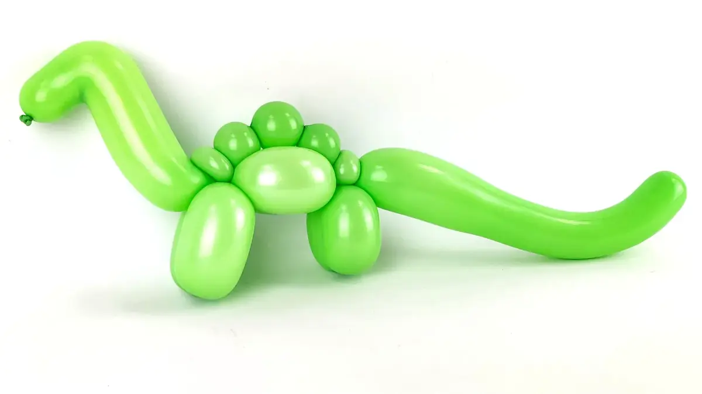
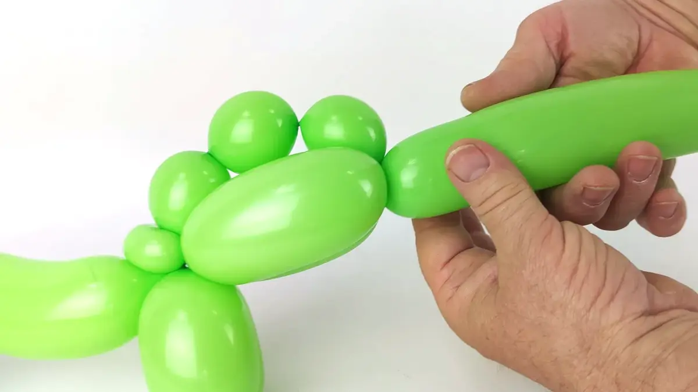
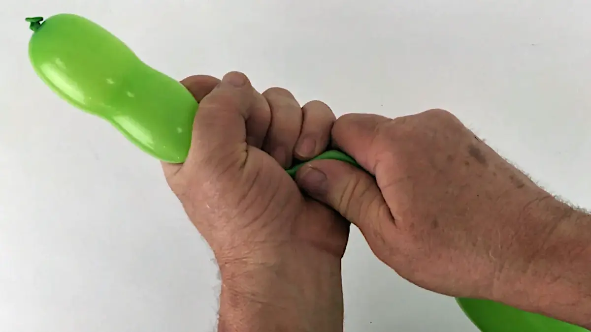
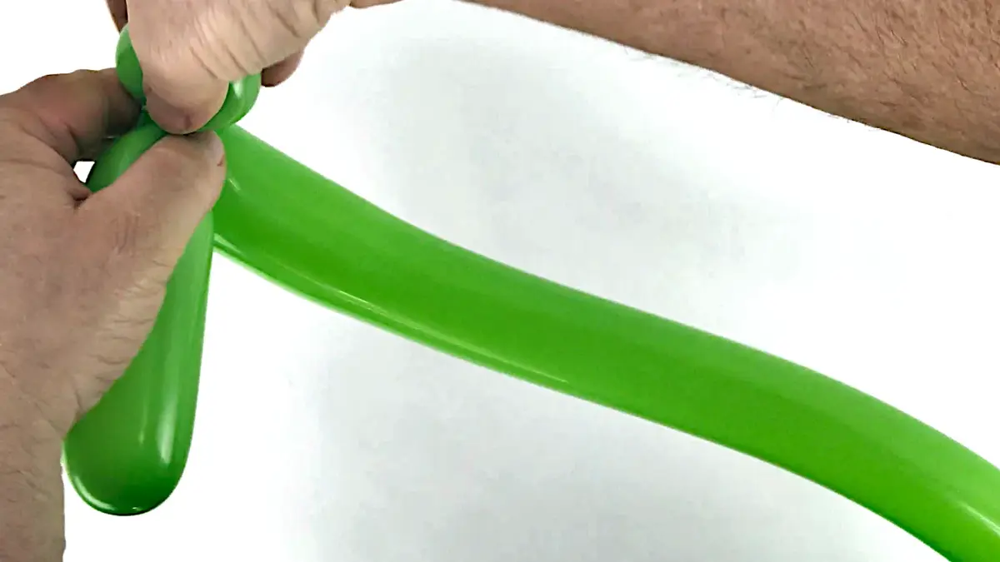
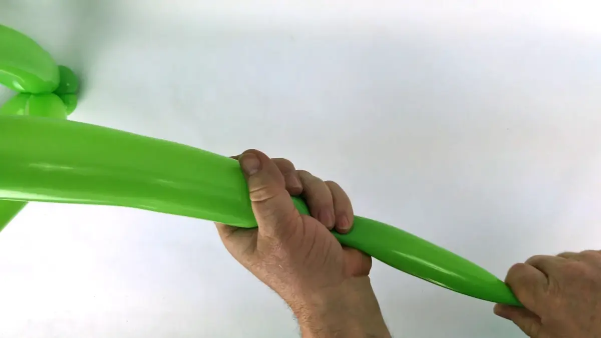

Nous continuons notre série dédiée aux faux-jumeaux avec ce nouveau tutoriel qui vous permettra d'apprendre non pas un, mais deux dinosaures.
Le premier, qui est le plus petit sur la photo ci-dessus, sera un diplodocus à l'allure sympathique et engageante, tandis que le second, qui est le plus grand sur la même photo, sera un vélociraptor à l'allure plutôt féroce et menaçante. Les tailles respectives de ces deux dinosaures sur cette photo sont à l'opposé de ce que l'on sait sur ces animaux préhistoriques.
Ceci est dû au contraintes techniques propres à la sculpture de ballon où, si l'on veut plus de détails, nous devons souvent ajouter plus de ballons, et donc plus de volume.
Mais le concept le plus important que nous allons revoir avec ce nouveau tutoriel, est celui que nous avons abordé avec le tutoriel cheval/licorne de même que celui du tigre/lion: il est assez facile de recycler une sculpture de ballon et de la transformer radicalement à l'aide de modifications somme toute mineures.
Techniques de base, nécessaires pour faire ces dinosaures en ballon :
1- Il suffit d'un seul ballon à modeler pour faire le diplodocus.2- Gonfler le ballon en laissant une marge d'environ la largeur de 5 doigts.3- Pour le plus de longueur de ballon possible, il faut en récupérer du coté du nœud. Revoir le tutoriel contrôle de la pression d'air.4- Si nécessaire, suivre les étapes 13 à 18 du tutoriel du contrôle de la pression d'air pour savoir comment passer de l'étape précédente à celle-ci.5- Plier une longueur de ballon d'environ la largeur de 2 doigts dans la main "de maintien",6- puis, avec la main "de manipulation", pincer la courbe pour imprimer la forme d'un angle aigu au ballon.7- Avec le premier pli bien sécurisé dans la main "de maintien", créer un zigzag en faisant un second pli à peu près à 10 cm du premier.8- Ici encore, pincer le second pli pour imprimer un autre angle aigu sur le ballon.9- Le zigzag toujours dans la main "de maintien", appuyer sur le ballon et tourner afin de créer le début d'une nouvelle bulle à 2 ou 3 cm de la base du zigzag.10- À ce stage, voici la forme du diplodocus en ballon.11- faire une bulle d’environ la largeur de 2 doigts,12- suivie par une seconde bulle de la même longueur, afin de pouvoir les bloquer ensemble pour former les deux pattes avant.13- Faire une nouvelle bulle un peu plus longue que les 2 précédentes (environ la largeur de 3 doigts),14- suivie par une seconde de la même taille, afin de pouvoir les bloquer ensemble pour former le ventre.15- À ce stage, voici la forme que le diplodocus en ballon devrait avoir.16- Former ensuite une petite bulle ronde,17- suivie par une deuxième, un peu plus large,18- suivie par une troisième, exactement de la même taille que la deuxième,19- et finalement, suivie par une quatrième, exactement de la même taille que les deux précédentes.20- En sécurisant la série de bulle afin qu'elle ne se défasse pas toute seule, positionner la dernière bulle contre les deux bulles qui forment le ventre du diplodocus,21- et en commençant par la dernière bulle, forcer toute la série de bulle entre les deux grandes bulles qui forme le ventre du diplodocus.22- Achever de les extraire complètement de l'autre coté du ventre. Ces bulles formeront le dos du diplodocus.23- Prendre maintenant le plus petite des bulles de la série,24- et la transformer en bulle-oreille.25- À ce stage, voici la forme que le diplodocus en ballon devrait avoir.26- Former maintenant une bulle un peu plus petite que celles des pattes avant du dinosaure,27- suivie par une seconde bulle exactement de la même longueur, afin de pouvoir les bloquer toutes deux ensemble à leur base pour former les deux pattes arrière du dinosaure.28- Et à ce stage, voici la forme que le diplodocus en ballon devrait avoir.29- Faire maintenant une petite bulle, exactement de la même taille que le première bulle de la série de quatre, transformée en bulle-oreille plus tôt,30- et la transformer en bulle-oreille également.31- Voici la forme que le dinosaure en ballon devrait avoir à ce stage. Ce qui reste du ballon à modeler constituera la queue du dinosaure.32- Il faut maintenant comprimer l'extrémité de la queue entre les paumes de main, pour repousser l'air vers les cuisses du dinosaure afin d'y former un renflement (attention cependant de ne pas faire exploser le ballon).33- Puis, affiner l'extrémité de la queue.34- Le but est d'obtenir une queue qui soit plus large à sa base, et plus fine à son extrémité.35- Donner ensuite une courbe naturelle à la queue du dinosaure,36- exactement de la même manière que pour le chien, le tigre ou le lion.37- C'est tout de même mieux ainsi, non ?38- Et pour finir, un petit dessin sur le visage.39- Et voilà un diplodocus à l'allure bien sympathique !
Le Vélociraptor en ballon
1- Il faudra 2 ballons à sculpter vert clair pour faire ce vélociraptor en ballon.2- Avec le premier ballon, commencer exactement comme pour le diplodocus, depuis l'étape 2 jusqu'à l'étape 24, jusqu'à obtenir la forme de l'étape 25 du diplodocus.3- À ce stage, au lieu de faire les pattes arrière, il faudra déjà faire la petite bulle de la même taille que celle de l'étape 29 du diplodocus,4- qu'il faudra également transformer en bulle-oreille.5- Identique à l'étape 32 du diplodocus.6- Identique à l'étape 33 du diplodocus.7- À ce stage, voici la forme que le corps du vélociraptor devrait avoir. Le mettre de coté pour le moment afin de travailler sur ses pattes arrière.8- Prendre le second ballon, le gonfler entièrement, puis laisser un peu d'air s’échapper avant de faire le nœud. Le ballon doit être souple mais pas trop mou.9- Identique à l'étape 3 du diplodocus.10- Identique à l'étape 4 du diplodocus.11- Commencer par le pied du vélociraptor en faisant une bulle-saucisse de la largeur d'à peu près 4 doigts.12- suivie par une seconde bulle, mais une petite, pas plus de la largeur d'un doigt,13- qu'il faudra aussi transformer en bulle-oreille pour former le talon.14- Après s'être assurer que l'air soit bien réparti sur toute la longueur du ballon, approcher son extrémité à coté du premier pied qui vient d'être fait, pour vérifier sa longueur exacte.15- À partir de l'extrémité du ballon, faire une bulle-saucisse exactement de la même taille que celle du premier pied, suivi par une petite bulle d'à peu près la largeur d'un doigt,16- qui sera également transformé en bulle-oreille pour former le talon de la seconde patte arrière.17- Positionner les deux pattes côte à côte et pincer le ballon au milieu des deux pattes ainsi formées, pour y imprimer un angle droit.18- Prendre maintenant le ballon au niveau de cet angle aigu,19- pincer le ballon à cet endroit,20- et faire pivoter chaque patte dans le sens opposé l'une de l'autre, exactement comme s'il fallait faire deux immenses bulles.21- Voici la forme ainsi obtenue. Des contours ont été ajoutés en rouge afin de faciliter la compréhension des prochaines étapes. 22- Reprendre le corps du vélociraptor, sur lequel il faudra maintenant insérer les pattes au niveau du pointillé rouge.23- Forcer le pli qui sépare les deux pattes (avec les contours en rouge) entre les bulles du corps au niveau du pointillé rouge mis en évidence à l'étape précédente.24- Une fois les deux pattes passées de l'autre coté, voici la forme obtenue.25- Prendre maintenant les pieds du vélociraptor,26- et positionner les deux bulles-oreilles côte à côte,27- afin de pouvoir les bloquer ensemble à leur base.28- Prendre à nouveau les deux pattes à peu près au niveau du tiers de leur longueur en partant du haut,29- et les plier (avec un bon pincement si nécessaire, afin d'imprimer angle aigu sur le ballon) pour former les genoux.30- Donner une courbe naturelle au départ des cuisses,31- de même qu'au tibias.32- Vérifier la forme de la queue et la fignoler si nécessaire.33- Ne pas oublier le dessin sur le visage,Et voilà ! Waouh, n'est-il pas très impressionnant ?